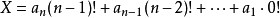

康托展开是一个全排列到一个自然数的双射，常用于构建哈希表时的空间压缩。 康托展开的实质是计算当前排列在所有由小到大全排列中的顺序，因此是可逆的。
今天训练赛有一道全排列题，一开始用的是DFS，和next_permutation(全排列函数)的。结果没想到教练卡了这两个超时，同学0到9打表都能过，晕死！！！我去！
康托展开

其中, ai为整数,并且 。
ai表示原数的第i位在当前未出现的元素中是排在第几个
既然康托展开是一个双射，那么一定可以通过康托展开值求出原排列，即可以求出n的全排列中第x大排列。
康托展开逆运算
如n=5,x=96时：
首先用96-1得到95，说明x之前有95个排列.(将此数本身减去1)用95去除4! 得到3余23，说明有3个数比第1位小，所以第一位是4.用23去除3! 得到3余5，说明有3个数比第2位小，所以是4，但是4已出现过，因此是5.用5去除2!得到2余1，类似地，这一位是3.用1去除1!得到1余0，这一位是2.最后一位只能是1.所以这个数是45321。
按以上方法可以得出通用的算法。
逆康托展开举例
一开始已经提过了，康托展开是一个全排列到一个自然数的双射，因此是可逆的。即对于上述例子，在给出61可以算出起排列组合为34152。由上述的计算过程可以容易的逆推回来，具体过程如下：
用 61 / 4! = 2余13，等于2,说明比第一位小的数有2个，所以首位为3。
拿 13 / 3! = 2余1，说明在剩下的中，小于第二位的数有2个，但是所以第二位为4。
拿 1 / 2! = 0余1，说明在剩下的中，小于第三位的数，所以第三位为1。
拿 1 / 1! = 1余0，说明在剩下的中，小于第四位的数有1个，所以第四位为5。
最后一位自然就是剩下的数2。
通过以上分析，所求排列组合为 34152。
举一反一(哈哈)，题目给样例：5 10
得：13452
分析下，先将10-1=9：
1 | 用9/4!(24) = 0余9，意味着没有数比第一位小： 1 |
2 | 拿9/3!(6) = 1余3，意味着有一位数比第二位小，但是因为1已经用过了。所以肯定是：3 |
3 | 拿3/2!(2) = 1余1，意味着有一位数比第三位小，所以是：4 |
4 | 拿1/1!(1) = 1余0，意味着没有数比第四位小，所以是：5 |
5 | 剩余2。 |
6 | 所以排列组合应该是：13452 |
代码实现
1 | #include<bits/stdc++.h> |
2 | using namespace std; |
3 | int n,m,sum; |
4 | static const int FAC[] = {1, 1, 2, 6, 24, 120, 720, 5040, 40320, 362880}; // 存放阶乘 |
5 | //康托展开逆运算 |
6 | int main(){ |
7 | while(scanf("%d %d",&n,&m)!=EOF){ |
8 | vector<int> v; // 存放当前可选数 |
9 | vector<int> a; // 所求排列组合 |
10 | int x=m-1; |
11 | for(int i=1;i<=n;i++) |
12 | v.push_back(i); |
13 | for(int i=n;i>=1;i--){ |
14 | int r = x % FAC[i-1]; |
15 | int t = x / FAC[i-1]; |
16 | x = r; |
17 | sort(v.begin(),v.end());// 从小到大排序 |
18 | a.push_back(v[t]); // 剩余数里第t+1个数为当前位 |
19 | v.erase(v.begin()+t); // 移除选做当前位的数 |
20 | } |
21 | for(int i=0;i<a.size();i++){ |
22 | printf("%d",a[i]); |
23 | } |
24 | printf("\n"); |
25 | } |
26 | return 0; |
27 | } |